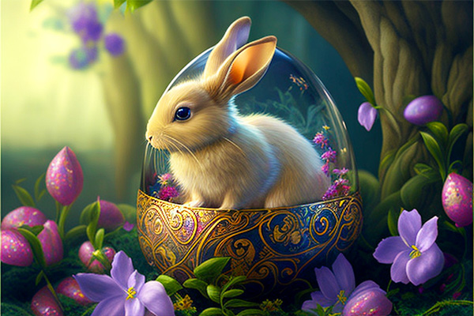

Wielkanoc to jedno z najważniejszych świąt w kalendarzu chrześcijańskim, obchodzone przez wielu ludzi na całym świecie.
Podczas Świąt Wielkanocnych ludzie obchodzą tradycje związane między innymi z malowaniem pisanek, przygotowywaniem świątecznych potraw oraz spotkaniami rodzinno-przyjacielskimi.
W niektórych krajach popularne są również poszukiwania wielkanocnych jajek ukrytych przez zajączka.
Zobacz więcej informacji na temat Świąt Wielkanocnych tutaj.